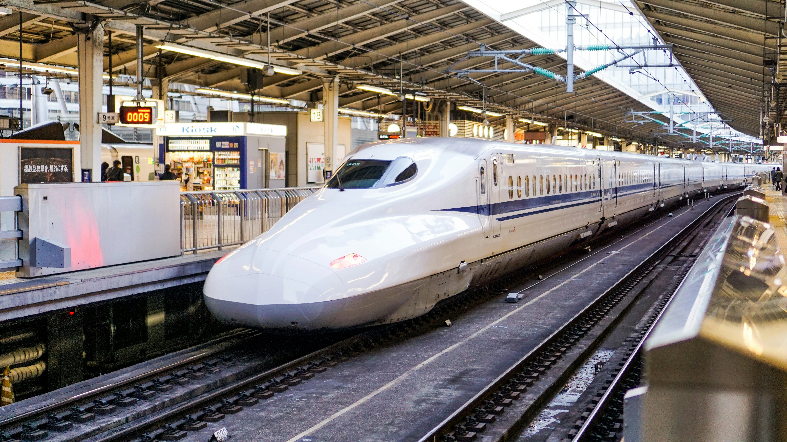

Tokio kann auf den ersten Blick überwältigend wirken – eine Stadt mit 14 Millionen Menschen, einem der komplexesten U-Bahn-Netze der Welt und einer Sprache, die du wahrscheinlich nicht sprichst. Aber keine Panik! Mit der richtigen Vorbereitung läuft alles wie am Schnürchen.
1. Die Suica-Karte – dein wichtigstes Reisemittel
Die Suica-Karte ist eine aufladbare Prepaid-Karte, die du für fast alle öffentlichen Verkehrsmittel in Japan nutzen kannst: U-Bahn, Busse, Regionalbahnen und sogar viele Lokalzüge. Aber das ist noch nicht alles – du kannst damit auch in Konbinis, an Automaten und in vielen Restaurants bezahlen. Kurzum: Die Suica ist dein Alltagsbegleiter.
Am Flughafen-Automaten
Grüne JR East-Automaten direkt nach der Ankunft. 500 Yen Kaution, direkt 3.000–5.000 Yen aufladen.
Suica-App (iPhone)
Aus dem japanischen App Store herunterladen, mit Apple Pay bezahlen. Komfortabel, kein Kartenkramen.
Pasmo-Karte
Quasi dasselbe wie Suica, anderer Anbieter. Funktioniert überall gleich – nimm, was du kriegst.
Mein Tipp: Lad immer etwas mehr drauf als du glaubst zu brauchen. Wenn das Guthaben leer ist, blockiert das Drehkreuz – das ist peinlich und du musst dann zum Aufladeautomaten.
2. Japan Rail Pass – lohnt er sich?
Der Japan Rail Pass (JR Pass) ist ein Touristenticket für 7, 14 oder 21 Tage mit unbegrenzten Fahrten auf allen JR-Zügen – inklusive der meisten Shinkansen.
Lohnt er sich für Tokio alleine? Ehrlich gesagt: nein. Tokios U-Bahn wird größtenteils von privaten Anbietern betrieben und ist nicht mit dem JR Pass nutzbar. Aber wenn du Tagesausflüge nach Kyoto, Osaka oder Hiroshima planst, rechnet er sich sehr schnell. Ein einfaches Shinkansen-Ticket Tokio–Kyoto kostet ca. 13.000–14.000 Yen. Ein 7-Tage-Pass (ca. 50.000 Yen) amortisiert sich nach zwei Hin- und Rückfahrten.
Wichtig: Den JR Pass musst du vor deiner Abreise aus Deutschland kaufen. In Japan selbst ist er für Touristen nicht erhältlich (Ausnahmen sind teurer). Empfehlenswert: japan-experience.com oder jrailpass.com.
3. Shinkansen – der Hochgeschwindigkeitszug
Der Shinkansen ist ein Erlebnis für sich. Pünktlich auf die Sekunde, blitzsauber und unfassbar schnell – Tokio nach Kyoto in 2 Stunden 15 Minuten.
Die wichtigsten Typen: Nozomi ist der schnellste, aber nicht mit dem JR Pass nutzbar. Hikari ist etwas langsamer, mit JR Pass nutzbar – für die meisten Strecken völlig ausreichend. Kodama hält überall, am langsamsten.
Tipp: Buche immer Seite A oder B auf der rechten Seite (in Fahrtrichtung) auf der Strecke Tokio–Kyoto – dort hast du den besten Fuji-Blick!
4. Die Tokioter U-Bahn verstehen
Tokios U-Bahn hat 13 Linien, bedient über 280 Stationen und wird von zwei Anbietern betrieben: Tokyo Metro und Toei Subway. Dazu kommen Dutzende private Linien. Klingt verwirrend? Ist es auch – aber nur auf den ersten Blick.
Was du wissen musst: Stationen haben Namen und Nummern (z.B. Shibuya = G01 auf der Ginza-Linie). Mit der Suica-Karte fährst du überall – egal welche Linie. Die Züge sind pünktlich. Wirklich.
Die wichtigsten Linien für Touristen:
- 🟠 Ginza-Linie – durch das Zentrum (Shibuya, Ginza, Ueno)
- 🟣 Hibiya-Linie – Roppongi, Ginza, Akihabara
- 🔵 Marunouchi-Linie – Shinjuku, Tokio Station, Ginza
- 🟢 Yamanote-Linie (JR) – der Ring um die Stadt (Shinjuku, Shibuya, Harajuku, Ikebukuro, Ueno)
5. Google Maps – dein bester Freund in Tokio
Lade Google Maps offline herunter, bevor du fliegst (Einstellungen → Offlinekarten → Bereich herunterladen). So kannst du es auch ohne Daten nutzen.
Google Maps kennt alle U-Bahn-Verbindungen, Buslinien und sogar Gehrouten zwischen Stationen – und zeigt dir die genaue Ausstiegsnummer an (z.B. „Ausgang 3b"). Das ist wichtig, weil große Stationen wie Shinjuku oder Shibuya dutzende Ausgänge haben.
6. Pocket WiFi oder SIM-Karte?
Pocket WiFi
Gut für Gruppen – mehrere Personen können sich verbinden. Am Flughafen abholen, am Ende abgeben. Ca. 8–12 € pro Tag.
SIM-Karte
Günstig und einfach. Datensim für 15 oder 30 Tage. IIJmio, Docomo Tourist SIM. Ca. 20–35 € für 15 Tage.
Wichtig: Normale Touristen-SIMs erlauben oft kein Telefonieren – nur Daten. Für Anrufe brauchst du eine spezielle Karte oder nutzt WhatsApp/LINE.
7. Geld – Bares ist in Japan noch König
Japan ist nach wie vor eine stark bargeldbasierte Gesellschaft. Viele Restaurants, kleine Läden und Tempel akzeptieren keine Kreditkarten. Heb regelmäßig Geld ab.
Die zuverlässigste Option: 7-Eleven-Geldautomaten (in jedem 7-Eleven-Konbini). Die akzeptieren internationale Karten und haben eine englische Oberfläche. Visa und Mastercard werden in größeren Restaurants und Kaufhäusern akzeptiert. American Express weniger.
8. Nützliche Apps auf einen Blick
| App | Wofür |
|---|---|
| Google Maps | Navigation, U-Bahn-Verbindungen |
| Google Translate | Speisekarten, Schilder (Kamerafunktion!) |
| Hyperdia | Genaue Zugzeiten und Preise |
| Tabelog | Restaurantbewertungen (japanisches Yelp) |
| LINE | Meistgenutzte Chat-App in Japan |
| Suica-App | Digitale Suica-Karte (iPhone) |
| Weather News | Sehr genaue Wettervorhersage für Japan |
Checkliste vor dem Abflug
- Japan Rail Pass kaufen (wenn du Tagesausflüge planst)
- Suica-Karte am Flughafen holen (oder Suica-App einrichten)
- SIM-Karte oder Pocket WiFi vorbereiten
- Google Maps offline für Tokio herunterladen
- Google Translate installieren (Kamerafunktion ist Gold wert!)
- Bargeld für die ersten Tage besorgen oder am Flughafen abheben
- Shinkansen-Tickets vorbuchen (bei Reisen außerhalb Tokios)
Tokio klingt nach Vorbereitung – aber diese Vorbereitung zahlt sich aus. Einmal angekommen und einmal mit der Suica-Karte durch die ersten Drehkreuze getappt, läuft alles wie von selbst. Versprochen.
Tokyo can look overwhelming at first glance – a city of 14 million people with one of the world's most complex metro networks and a language you probably don't speak. But don't panic! With the right preparation, everything runs smoothly.
1. The Suica Card – your most important travel tool
The Suica card is a rechargeable prepaid card you can use on virtually all public transport in Japan: metro, buses, regional trains. But it also works at convenience stores, vending machines and many restaurants. In short: Suica is your everyday companion.
At the airport machine
Green JR East machines right after arrival. 500 yen deposit, load 3,000–5,000 yen to start.
Suica App (iPhone)
Download from the Japanese App Store, pay with Apple Pay. Convenient – no need to dig out a card.
Pasmo Card
Essentially the same as Suica, different provider. Works everywhere the same – just grab whichever is available.
My tip: Always load more than you think you'll need. If the balance runs out, the gate blocks – embarrassing, and you'll have to find a top-up machine.
2. Japan Rail Pass – is it worth it?
The JR Pass is a tourist ticket for 7, 14 or 21 days of unlimited travel on all JR trains including most shinkansen.
For Tokyo only? Honestly: no. Tokyo's metro is mostly run by private operators not covered by the JR Pass. But for day trips to Kyoto, Osaka or Hiroshima, it pays for itself very quickly. A one-way shinkansen Tokyo–Kyoto costs about 13,000–14,000 yen. A 7-day pass (about 50,000 yen) breaks even after two return trips.
Important: You must buy the JR Pass before leaving your home country. It's not available to tourists in Japan (exceptions cost more). Try japan-experience.com or jrailpass.com.
3. Shinkansen – the bullet train
The shinkansen is an experience in itself. Punctual to the second, spotlessly clean and breathtakingly fast – Tokyo to Kyoto in 2 hours 15 minutes.
The main types: Nozomi is the fastest but not covered by the JR Pass. Hikari is slightly slower, JR Pass valid, and perfectly adequate for most routes. Kodama stops everywhere – slowest.
Tip: On the Tokyo–Kyoto route, always book seats on the right side (seats A or B, facing the direction of travel) – that's where you get the best view of Mt. Fuji.
4. Understanding Tokyo's metro
Tokyo's metro has 13 lines, serves over 280 stations and is operated by two companies: Tokyo Metro and Toei Subway, plus dozens of private lines. Sounds confusing? It is – but only at first.
What you need to know: stations have names and numbers (e.g. Shibuya = G01 on the Ginza Line). With your Suica card, you can ride any line. Trains are punctual. Really.
5. Google Maps – your best friend in Tokyo
Download Google Maps offline before you fly (Settings → Offline Maps → Select area). This way you can use it without mobile data. Google Maps knows all metro connections and even tells you which exit to use – crucial in giant stations like Shinjuku and Shibuya.
6. Pocket WiFi or SIM card?
Pocket WiFi
Great for groups – multiple people can connect. Pick up at the airport, return at the end. About €8–12 per day.
SIM Card
Cheapest and simplest. Data SIM for 15 or 30 days. IIJmio, Docomo Tourist SIM. About €20–35 for 15 days.
7. Cash – still king in Japan
Japan remains a strongly cash-based society. Many restaurants, small shops and temples don't accept credit cards. Withdraw cash regularly.
Most reliable option: 7-Eleven ATMs (in every 7-Eleven convenience store). They accept international cards and have an English interface.
8. Useful apps at a glance
| App | What for |
|---|---|
| Google Maps | Navigation, metro connections |
| Google Translate | Menus, signs (camera function!) |
| Hyperdia | Exact train times and prices |
| Tabelog | Restaurant reviews (Japanese Yelp) |
| LINE | Most-used chat app in Japan |
| Suica App | Digital Suica card (iPhone) |
| Weather News | Very accurate Japan weather forecasts |
Pre-departure checklist
- Buy Japan Rail Pass (if planning day trips)
- Get Suica card at the airport (or set up the Suica App)
- Arrange SIM card or Pocket WiFi
- Download Google Maps offline for Tokyo
- Install Google Translate (camera function is invaluable!)
- Get cash for the first few days or withdraw at the airport
- Pre-book shinkansen tickets (for trips outside Tokyo)
Tokyo sounds like a lot of preparation – but it pays off. Once you're there and you've tapped through the first gates with your Suica card, everything runs like clockwork. Promise.
Noch Fragen vor deiner Tokio-Reise?
Still have questions before your Tokyo trip?
Ich helfe gerne weiter – ob per Nachricht oder direkt auf einer Tour. Ich beantworte alle deine Fragen und sorge dafür, dass du optimal vorbereitet ankommst.
I'm happy to help – by message or directly on a tour. I'll answer all your questions and make sure you arrive perfectly prepared.
Frage stellen